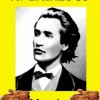

Nu poţi să vinzi tampoane O.B. punând pe ambalaj o poză cu Maica Tereza, n-ai cum să faci o reclamă la Bonibon avându-l ca personaj pe Ivan cel Groaznic, iar dacă scoţi pe piaţă un ursuleţ de pluş roz, ar fi bine nu-l cheme Kurt Treptow. Dacă firma ta se numeşte Dristor Kebab, parcă n-ai boteza un meniu Kate Middleton. Până şi creativitatea ar trebui să aibă un filtru calibrat în funcţie de bun simţ.
Ce se întâmplă când auto-cenzura lipseşte? Asociezi puiul marinat de la Kentucky Fried Chicken (KFC) cu poezia lui Mihai Eminescu. Gafa aparţine agenţiei Adbrain(less) Partners, care s-a gândit să organizeze concursul „compune o poezie Smart” (smart, cum îi zicea amicul Johnny Creangă lui Mike E., pletosul din Ipoteşti), dedicat aniversării unui număr de ani de la naşterea poetului. Competitorii au fost invitaţi să-şi dezlănţuie lirismul primind pentru asta nişte pui prăjit în ulei.
{kind=link}
Iată cea mai bună „poezie”, câştigătoarea marelui premiu. Zămislirea lirică e intitulată „Poezie şi nu doar”. Linişte, vorbeşte poetul :
Un meniu Smart aş vrea,
Şi cu Hot Wings şi cu Crispy Strips
Să mănânc uşor încet,
Cea mai bună mâncare pe care o apreciez.
Captura de ecran a capodoperei premiante:
{kind=link}
E pe bune!
Asta e cea mai performantă creaţie, conform voturilor publicului KFC, care e la fel de inteligent ca şi organizatorii. Observaţi metrica inconfundabilă a poeziei, rima subtilă (vrea, strips, încet, apreciez), inventivitatea abordării (scriitorul de ocazie mănâncă uşor şi încet, realizând probabil pericolul de indigestie), precum şi repetiţia mănânc-mâncare, semn al abilităţii de a jongla cu sensurile. Titlul „Poezie şi nu doar prea” este înălţător, alegerea unei sintagme eliptice de predicat invitând la introspecţie. Eminescian, nu?
Avem dovada clară că excesul de fast-food tâmpeşte. Totuşi, nu te poţi supăra pe participanţi. Tembelismul atroce al organizatorilor (KFC România şi agenţia Adbrain Partners) merită însă remarcat. Simpla asociere KFC-Eminescu e la fel de firească precum aceea dintre orezul sintetic şi Shakespeare.
“Hors concours“, oferim şi noi o „poezie” cu acelaşi grad de inteligenţă:
Eminescu, mort de beat,
Crispy Strips a comandat
Puiul era alterat,
La stomac el s-a stricat.
Tare l-a mai usturat,
Când, sub plop,el s-a…a creat.
Serios acum, drumul spre derizoriu e foarte uşor de parcurs. Mai ales în publicitate. Când, involuntar, ridiculizezi un simbol, s-ar putea să faci rău chiar mărcii de la care iei bani grei. Mihai Eminescu nu e intangibil, nu e o icoană, nu e nici sfânt, dar parcă n-are ce căuta pe ambalajul unsuros cu pui crocant şi cartofi fleşcăiţi.
Doamne ce creatie )))))))))
)))))))))
“Foaie verde barabula/ Stau in apa pan’ la brau”…rima e in apa
Iar asta e poezia câştigătoare! Vă daţi seama cum sunau celelalte catrene?
Il stiu pe domnul Rebreanu…Sebastian, nu Liviu.
Este jucator activ la toate concursurile de pe Feisbuc, dar nu as fi zis ca numele lui atat de rasunator in proza romaneasca, se poate mandri si cu asemenea talente poetice.
Poezia lui m-a emotionat pana la lacrimi si mi-a amintit de o alta balada memorabila “Foaie verde stalp/Curge apa-n beci”.
De-a dreptul emotionant, va spun…
chiar si daca rebreanu asta s-a votat singur, organizatorii ce-au pazit? pana la urma e numele KFC in joc, ei se fac de kko, nu “poetul” rebreanu.
rectificam, ei sunt de kko, nu se fac
va mai dau una din cele mai reusite balade populare
“Pe luciul unei ape/Patru ochi luceste/Ce sa este oare?/Este doua peste!”
Cu asta luam sigur premiul I
Da, domn’le…chiar asa, KFC-ul sa se faca de kko pentru Rebreanu!?
Cred ca nici reprezentantilor nu le mai pasa de sloganul firmei pe care o reprezinta. Asa se intampla in Romania!
Cat dezinteres si cata superficialitate din partea firmei, sa aleaga o asemenea poezie, cand tema concursului a fost atat de elaborata.
Pacat, ii credeam oameni seriosi pe astia de la KFC, eu ii urmaresc cu interes sa vad ce noutati mai apar…acum chiar ca mi-au lasat un gust amar (de la Crispy Strips).
Pare mai degrabă vina genialilor de la marketing cărora li s-a părut că Eminescu e numai bun de pus să hăpăie aripioare piperate. Când porneşti cu o asociere idioată, rezultatul campaniei nu poate fi mai pricopsit.
Comments on this entry are closed.